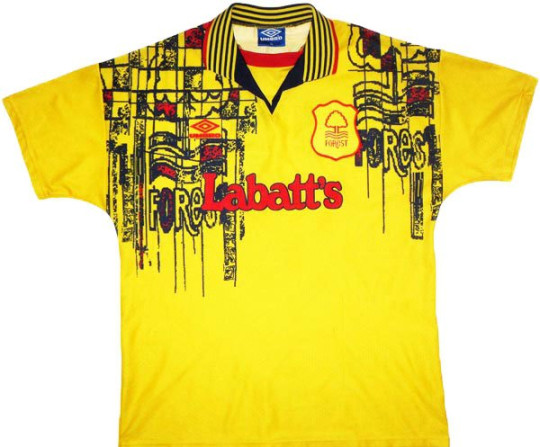

Forest Away
Tough guy Stuart Pearce did not earn his nickname "Psycho" by wearing kits like this!
Tough guy Stuart Pearce did not earn his nickname "Psycho" by wearing kits like this!
Larger than life character Ian Wright, may of even shied away from this top!
As bad as this kit is, you can't hold down a player like Robert Rosario!
Hot shot Robbie Fowler was probably grateful for this kit taking the attention away from his very 90's hair style!
Even a young David Beckham faded into the background in this little number off!
Let's be fair, we could have picked a number of goalkeeper tops from the 90's!
There's only one orange Ruud Gullit likes wearing, and it isn't this one!
Despite this dull kit, Mark Bright had a relatively 'bright' season (pun intended)!
Purple really isn't Jurgen's colour!